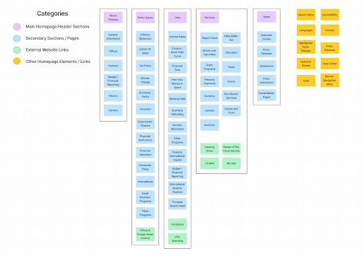
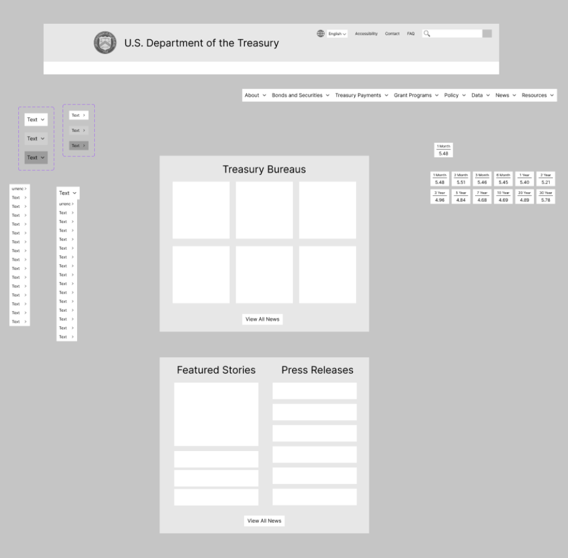
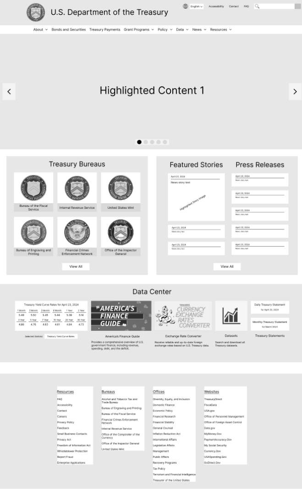
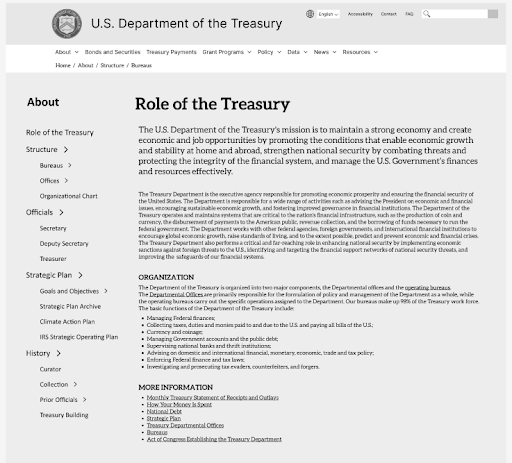
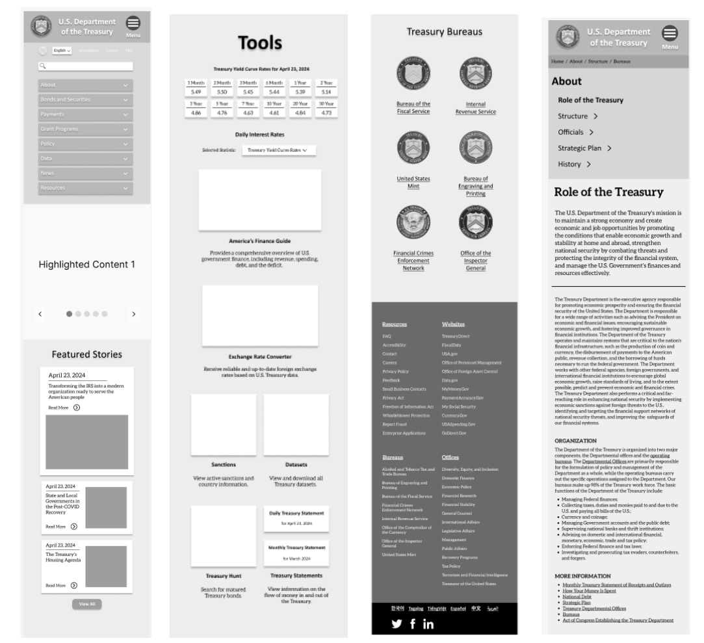

Sitemap Redesign
I created a redesign of the Treasury website’s original site map to improve clarity. Specifically, I broke up the “services” menu into a series of different menus that more specifically describe the type of content contained within. I also moved most external links out of the main headers and moved them lower on the homepage to create a more intuitive separation.
Components
I started my design by creating a few rough versions of reusable elements that could be repeated across the new site.
Wireframes
  Testing and Improvements
I ran several tests on my wireframes asking users to perform a basic navigational task (opening a header menu and navigating to a particular page) as well as asking for additional feedback on the aesthetics and clarity of the site. A summary of some key pieces of feedback and the corresponding changes I made to the final prototype are below.
Key Feedback:
• Original color scheme was on the bright side, distracting from website content
• Main website sections lumped too closely together, impacting legibility
• Original secondary page sidebar didn’t expand properly
Changes to Final Prototype:
• Muted colors on homepage and made icons/images more consistent
• Gave each section on website its own set of space, nothing adjacent
• Created fully functioning expandable / retractable accordion menu for sidebar